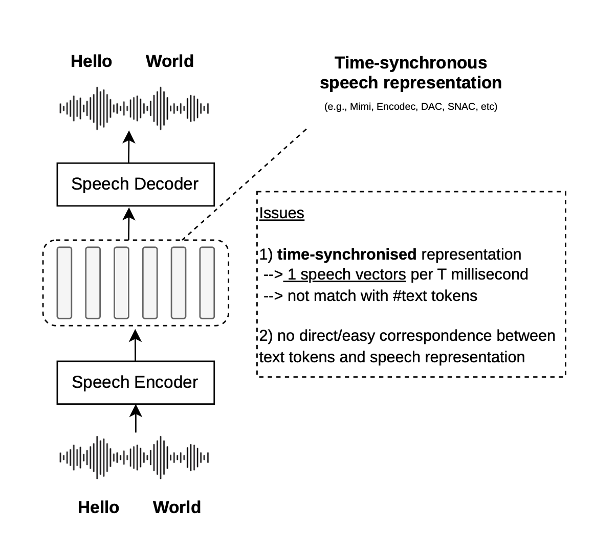
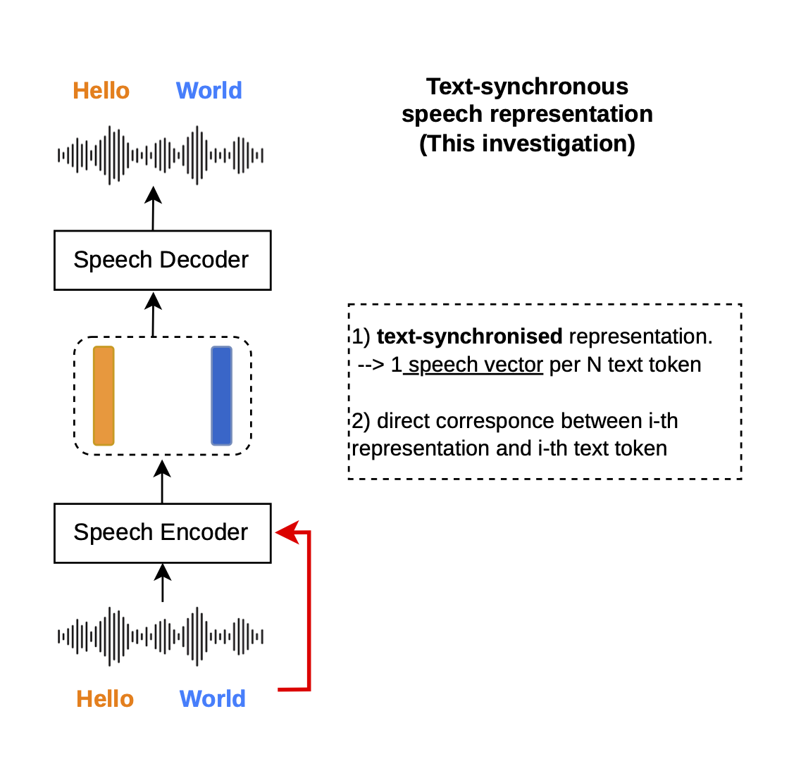
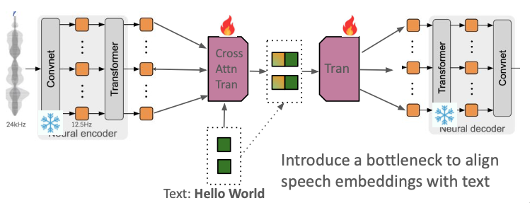

First, we report the speech reconstruction performance of our model on a standard benchmark, evaluating the Word Error Rate (WER) on the LibriSpeech test-clean dataset, and compare against baselines and other methods.
Speech embeddings are inherently time-synchronous (e.g., one vector every 20ms), whereas LLMs operate in a text-synchronous space (one vector per subword). Towards the broader goal of improving speech-text modeling, we investigate this question: could we make speech representations operate in text-synchronous representations?
To answer this question, we introduce a lightweight architecture (cross-attention encoder + causal decoder) to an existing audio tokenizer (Mimi), turning it into TextSyncMimi. We train the additional components while freezing the original audio tokenizer using only 1.5K hours of speech data. The resulting model (TextSyncMimi) produces speech representations that are synchronous with text tokens with low reconstruction error.
This article discusses the time-text mismatch problem, our architectural solution, and experimental results. We also provide an interactive demo for token-level speech editing, showcasing one utility of the text-synchronous speech representations, alongside the "lessons learned" and pitfalls to avoid from our study.
Speech embeddings (i.e., encoders) map raw audio waveforms into sequences of continuous vectors that represent fixed time intervals (e.g., one vector every 20ms)—time-synchronous representations. While this works well for speech processing, LLMs operate in a different temporal space: they process semantic concepts as discrete text tokens (e.g., one vector for a subword)—text-synchronous representations. This mismatch could make it more difficult to build multimodal speech-text LLMs. For example, Moshi, SyncLLM, SALMONN-Omni operate in time (e.g., one step = fixed ms), while Llama-Omni2, Qwen3-Omni, and LLM-based TTS (e.g., CSM, OrpheusTTS) mix time and text tokens.
We ask: "can we turn[1] existing time-synchronous speech representations into text-synchronous ones?"
[1] Training a new speech embedding tokenizer from scratch requires massive data (e.g., Mimi was trained on 7M hours of speech), and this work focuses on adapting existing ones (e.g., with around 1K hours of speech).


To transform these representations, we introduce an Additional Encoder and an Additional Decoder built on top of an existing speech tokenizer, where we use Mimi as an example in this work.
The speech encoder of Mimi operates at 12.5 Hz (i.e., yielding one representation every 80 ms), which is discretized by an RVQ network with 32 codebooks. The speech decoder of Mimi takes the reconstructed representation (one vector every 80 ms) and decodes the waveform back.
To align Mimi's continuous speech representations with text embeddings (i.e., turning time-sync into text-sync representation), we add a cross-attention network to the encoder, explicitly targeting the text token length. Simultaneously, the causal transformer decoder uses force-aligned signals to map the cross-attention output back to the continuous latent space (for reconstruction or speech generation purpose). By doing this (well we still have to train the cross-attention and the causal decoder), we turn time-sync Mimi tokenizer into text-sync Mimi tokenizer.

An additional encoder (4-layer, 16.8M parameters) that aligns Mimi's speech representations with text embeddings (we use the Llama3 embeddings). It maps the audio sequence to the semantic token space via a cross-attention bottleneck:
A causal transformer network (4-layer, 12.6M parameters) that reconstructs the time-synchronous latents from the text-synchronous representations:
Note: We predict the continuous latent \(z\) directly and minimize the \(L_2\)-norm (instead of discretized tokens) so that the output can be fed into the frozen Mimi decoder for waveform generation.
💻 The model definition for the Text-Sync Mimi tokenizer can be found at modeling_text_sync_mimi.py.
The system predicts the continuous latent space directly. We optimize this mapping using a combination of L2-distance between the ground-truth Mimi representation (z) and our causal decoder's prediction (z_hat), alongside a Binary Cross-Entropy (BCE) loss for the stop token <|time_speech_end|>.
\[ L = L_2(z, \hat{z}) + \alpha L_{BCE}(\text{stop}) \]
We note that the model can be evaluated in different ways. First, since TextSyncMimi must preserve the speech content through its encode-decode architecture, we measure speech reconstruction quality using Word Error Rate (WER) on a standard benchmark. Second, to demonstrate the text-synchronous property of our representations, we show a speech editing application where representations at specific token positions can be swapped between two utterances. Because there is no established benchmark for this task, we provide a live interactive demo to illustrate the capability.
First, we report the speech reconstruction performance of our model on a standard benchmark, evaluating the Word Error Rate (WER) on the LibriSpeech test-clean dataset, and compare against baselines and other methods.
To demonstrate the text-synchronous property directly, we show zero-shot speech editing: given two utterances, one can swap the latent representation at the i-th text token position between them. This is only possible because our representations are aligned to text tokens. An analogous operation in time-synchronous systems would require an explicit force alignment, or a waveform inspection. As there is no established benchmark for this task, we provide a live demo, running on a Hugging Face Space below.
Note: The embedded demo may not load or respond on this page, please access it directly on 🎮 HuggingFace Space.
A practical constraint we encountered: in Mimi—and neural codecs more generally—the RVQ module is not simply a quantizer. It also includes a learned transformation that maps between the encoder's output space and the decoder's input space. Concretely, even without any quantization error, the encoder output and the decoder input are different vectors. We initially treated them as interchangeable (modulo rounding), and discovered mid-way through that this assumption does not hold.
The consequence is that our text-synchronous representations cannot be directly discretized using Mimi's existing quantizer. Our TextSyncMimi therefore operates in continuous latent space—which works well for reconstruction tasks, but it would require a new/modified quantizer to be used as discrete tokens in cross-entropy loss training.
This work was originally conducted in early summer 2025. It was intended as an investigation into better audio tokenizers for speech-text foundation models. With several results still inconclusive, we proceeded with our audio pre-training project, SODA, using an existing tokenizer (Mimi). Also, we later came across TASTE—a well-executed concurrent work that tackles the same problem of text-sync representations, and TASTE also covers a range of experiments in this space (we recommend reading it!).
We also explored an additional research direction: disentangling semantic and acoustic information within the text-synchronous latent space, aiming for independent control over the what (content) and the how (prosody/acoustics) of speech. However, this proved challenging—our attempts led to significant degradation in reconstruction quality. Details on this disentanglement investigation (inc. architectural explorations and training objectives) with negative results will be added in a future update.